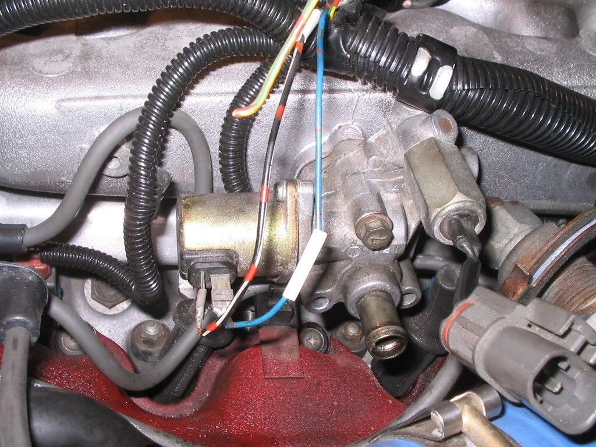
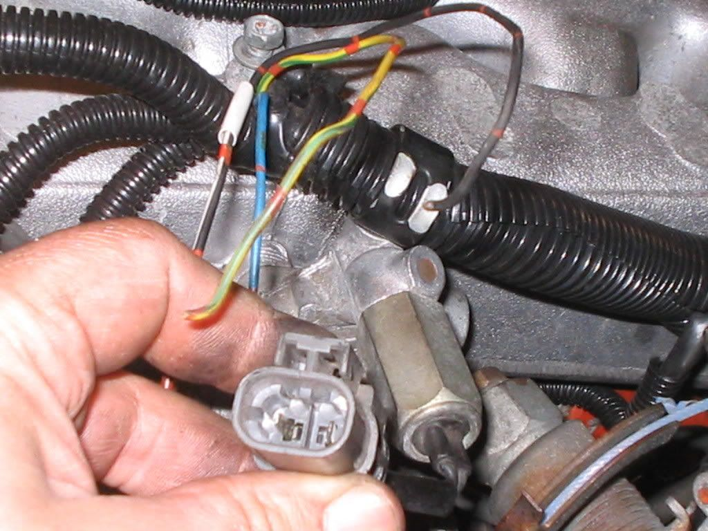
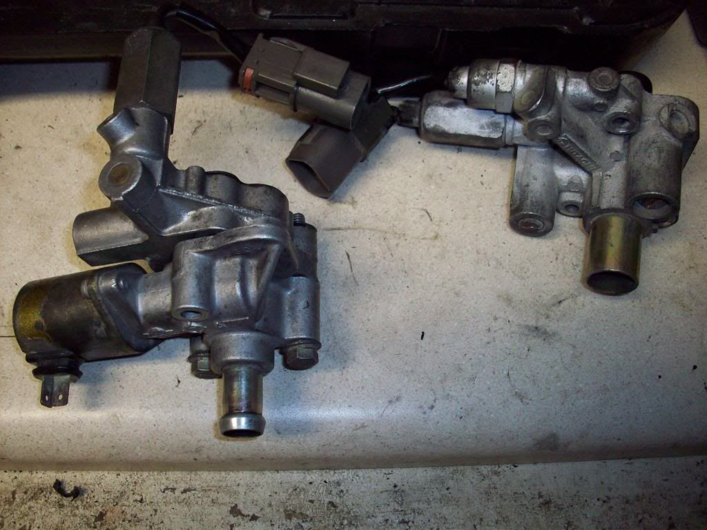

-
i thought i posted this last night, but i guess i forgot to click post or someone didnt like it and deleted it.. anyways
6 years ago i turboed my NA and i always regretted not hooking up the turbo aac valve.. this weekend i finally did it.. i thought there were harness changes that need to be made, but its just a matter of connecting the 4 wires to the right connectors on the aac valve. so if you have a car with an NA harness and a turbo computer and aac valve, this is how to make it work....
cut the connector off of the cars harness and strip the wires.. connect the white/black and blue wire as shown in the first picture..

edit.. forgot to mention, hook up the yellow/green wire to the left wire in the connector i am holding, and hook the black wire up to the other one.

i know most of you dont bother with the idle control stuff, but i like how they work so im happy with it hooked up and working.. i hope this helps someone.. enjoy -
I assume prior to this you were using just an idle screw?
I'm using the NA plenum, so it's still running the NA idle stuff as far as I know. Either way, I don't have any trouble (except when the buggered plastic connectors come undone and my idle gets shittly like a vacuum leak :wink . I can see how it would be an advantage over just an idle-set screw though.
My beloved Z:1987 2+2 NA2T w/30a swap.
. I can see how it would be an advantage over just an idle-set screw though.
My beloved Z:1987 2+2 NA2T w/30a swap.
My black sheep: 88ss parts car (pretty much stripped and gone)
207k miles and counting. Turbo'd since 155k. -
i had the NA idle control in the car.. when it was plugged in the idle rpm would vary between 700 and 1100.. it would shift back and forth about twice a minute.. it drove me crazy so i unplugged it.. as a result my car would not idle while cold, i would have to keep it running for a minute or so with the gas pedal. using the turbo idle control everything now works perfect..Az4u2c wrote: I assume prior to this you were using just an idle screw?
I'm using the NA plenum, so it's still running the NA idle stuff as far as I know. Either way, I don't have any trouble (except when the buggered plastic connectors come undone and my idle gets shittly like a vacuum leak :wink. I can see how it would be an advantage over just an idle-set screw though.
-
[quote]Chris86NA2T wrote:No shit? Yeah I'm sure that would bug me too. I wonder why mine doesn't do that? I guess i better not rock the boat, maybe i don't want to know. If it's not broke (yet) don't fix it. I've had a real fun time chasing down vacuum leaks, but the silicone lines seam to have cured that, or at least made the problem insignificant.Originally posted by Az4u2cMy beloved Z:1987 2+2 NA2T w/30a swap.
My black sheep: 88ss parts car (pretty much stripped and gone)
207k miles and counting. Turbo'd since 155k. -
[quote]Az4u2c wrote: [quote=Chris86NA2T]yea, maybe my car is retarded.. or maybe its just some strange combination of computer and wire harness that is for some reason different in my car.. i have an 86na harness with an 88T computer.. i dont think anyone else has ever had this complaint except me.. regardless, this is the fix for it, and i guess if you are anal and you want the turbo idle control with the turbo computer, this is the way to do it..Originally posted by Az4u2c -
I set a swith up to accessory portion of the iacv for warm up. Works freakin great.
Terrible idea putting those wheels on… -
i thought of doing something similar years ago.. the thing is, why have to flip a switch if there is already something there that works on its own automatically.MrwassmanNA2T wrote: I set a swith up to accessory portion of the iacv for warm up. Works freakin great. -
I agree, I like the stock idle controls. Cold starts and the idle up just makes me feel better about things in general.
The only real reasons I have ever come up with for not having it is cosmetics or if you are one of the very few people who have a completely custom plenum that they just wont attach to. (L&P and Engloid style will use them for those that are unsure)Just stand back and throw money.
Performance costs money.
Reliable performance costs more. -
[quote]Chris86NA2T wrote:If my system worked, i wouldnt have done this. With the cams and whatever else is wrong with my car, it is realllly cold blooded. So until then, easy fix. :POriginally posted by MrwassmanNA2T
Terrible idea putting those wheels on… -
ive been looking for this info for a while…when you put on your headlights this will increase the idle rpms,correct??thx,mike. -
I should be able to do this on my pathfinder-plenum since the 88T ecu should hook up to the pathfinder solenoid. Evidently, this type of idle control was used on non-turbo cars from Nissan.Try not to be a Yahoo -
Chris86NA2T- I had the NA idle control in the car.. when it was plugged in the idle rpm would vary between 700 and 1100.. it would shift back and forth about twice a minute.. it drove me crazy so i unplugged it.. as a result my car would not idle while cold, i would have to keep it running for a minute or so with the gas pedal. using the turbo idle control everything now works perfect..
That is EXACTLY what mine does even after it is fully warmed up. Thanks again. Anyone have a TURBO AAC for sale?Everything is Meaningless. -
BTW How can you tell the difference in the NA or Turbo AAC? Are there any physical differences?Everything is Meaningless. -
here are the two

i have that same issue after an na to turbo swap
i read this: Chris86NA2T- I had the NA idle control in the car.. when it was plugged in the idle rpm would vary between 700 and 1100.. it would shift back and forth about twice a minute.. it drove me crazy so i unplugged it.. as a result my car would not idle while cold, i would have to keep it running for a minute or so with the gas pedal. using the turbo idle control everything now works perfect..
i got excited and did the switch and now it idles at 1200 rpm
so i switched back to not have such a high idle and im back to where i started: hesitant to start and a 700-1100 fluctuation after warmed up.
any more ideas?
please help -
May sound obvious but, have you attempted adjusting your idle with everything hooked up as Chris outlined?Everything is Meaningless.

Copyright © 2006–. All rights reserved. Privacy Policy